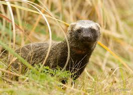
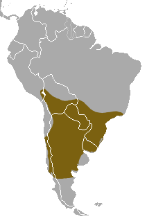

Furão pequeno
Nome científico:(Galictis cuja Molina, 1782)
Nome comum: Furão pequeno, furão-dos-pampas.
Classificação biológica:
Domínio: Eukaryota.
Reino: Animalia.
Filo: Chordata.
Classe: Mammalia.
Ordem: Carnivora.
Família: Mustelidae.
Gênero: Galictis.
Espécie: Galictis cuja.
Nutrição: Carnívoro.
Hábitos alimentares: Alimenta-se principalmente de pequenos mamíferos, aves, répteis, anfíbios e insetos. É um caçador ágil e oportunista.
Morfologia do corpo: Possui corpo alongado e esbelto, com pelagem curta e densa, geralmente de cor marrom-acinzentada com uma faixa branca que se estende da cabeça até os ombros. Mede entre 30 e 50 cm de comprimento, com uma cauda de 15 a 20 cm, e pesa entre 1 e 2,5 kg.
Comportamento: Vive em pequenos grupos familiares ou sozinho. É um animal diurno e terrestre, conhecido por sua agilidade e habilidade de escavar tocas. É territorial e pode ser agressivo quando ameaçado.
Principais Presas: Pequenos mamíferos, aves, répteis, anfíbios e insetos.
Principais Predadores: Aves de rapina, felinos maiores e cobras.
Locais habitados
Distribuição:Biomas Pampa, Cerrado, Pantanal, Caatinga, Mata Atlântica.
Habitat: Habita uma variedade de ambientes, incluindo pampas, savanas, florestas e áreas semiáridas. Prefere locais com vegetação densa e próximos a fontes de água.
Reprodução: A reprodução ocorre durante o ano todo, com gestação de aproximadamente 40 dias. A fêmea dá à luz de 2 a 4 filhotes, que são cuidados pela mãe até se tornarem independentes.